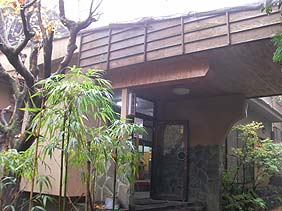
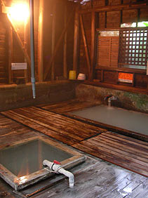

|
■2006/12/02/(Sat)21:14
冬の温泉紀行
|
 再び宮崎に。
ちょろっと霧島の秘湯に行ってまいりました。
湯之谷山荘とゆー湯治客も多い温泉。
もちろん源泉掛け流し100%。泉質は単純硫化水素泉。
 3種類のお湯があって、ひとつは露天、ひとつは濁りのある熱めのお湯。もうひとつが冷泉でほのかに炭酸している濁りのあるお湯。この熱いのとぬるいのの2段構成が気持ちよかです。あんまり温泉に長湯できないわたくしなのだけどあまりの心地よさに信じられないくらい長湯。しかもチェックアウトまで3回も入りにくるとゆー有様。でもとくに湯あたりもなく、ただただ気持ちいいばかり。。。
昼間は立ち寄り湯の人たちが順番待ちになるぐらいの人気ぶりらしいのだけど、泊まりで行ったのでのんびり独り占めでつかったところ、びっくりするぐらいお肌つるつるに！こんなに反応はっきりの温泉は初めてかも。
壁に「湯の花持ち帰らないでください」とゆー張り紙がしてあったのだけど、気持ちはわかるなぁ〜。でも、ホントわんさと湯の花が積もってましたわ。これってもって帰るとホントに家でも同じ効能があるのかしらん？
お風呂も良かったけど、ご飯も美味しかったので、ここはまた行きたいなぁ〜。
|
| |